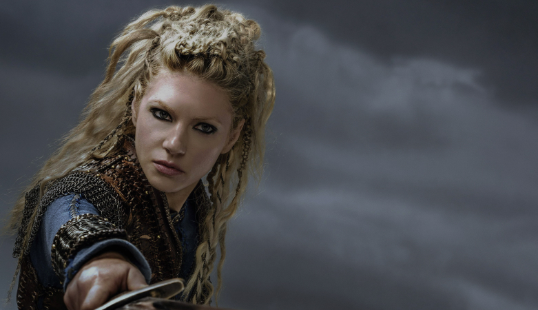
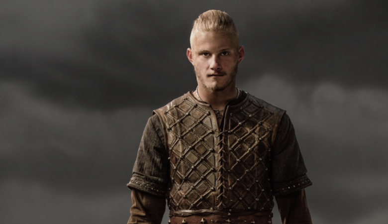
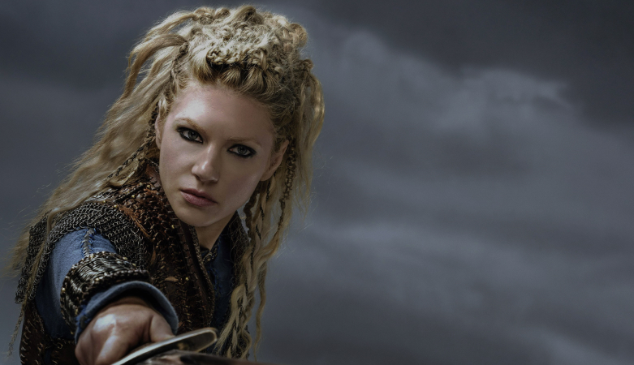
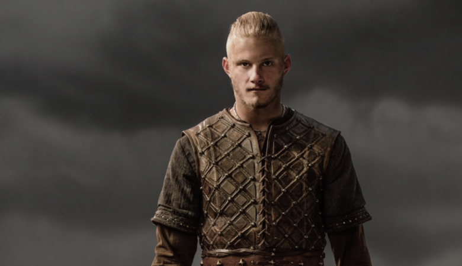

Викинги – шикарный исторический сериал, один из лучших в своем жанре, шоу может похвастаться огромной фан-базой, а также тем, что пробудил интерес к истории и возродил моду на викингов.
«Викинги» созданы по заказу канала американского канала History, однако работали над ним канадцы и ирландцы. Сериал поражает масштабными сценами сражений, добротным и глубоким сценарием, а также максимальным вниманием к исторической эпохи. Авторы сериала потратили кучу времени и денег (бюджет первого сезона - $40 млн, дальше суммы возросли) на то, чтобы викинги и их современники выглядели в шоу так, какими они был в свое время – VIII – IX веках нашей эры. С другой стороны – отсутствие точных исторических фактов и (полу)легендарность многих событий позволили авторам сериала вольную трактовку многих событий.
 


